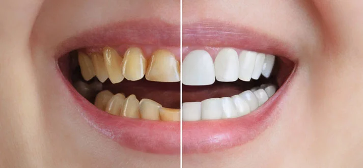
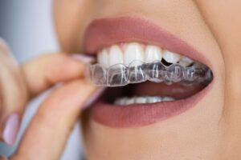

Cosmetic Dentistry
Cosmetic dentistry encompasses dental treatments focused on enhancing the aesthetic appearance of a person's teeth, gums, and bite. While functionality might not be the primary concern, these procedures aim to improve the visual aspects of oral health.
More than just achieving a brighter smile, cosmetic dentistry considers the overall health and look of your teeth and gums. The ultimate goal is often to boost self-confidence and improve well-being through a more pleasing smile.
Types
Cosmetic dentistry focuses on enhancing the visual aspects of a person's teeth, gums, and bite. While improving function can be a side effect, the primary goal is aesthetic improvement.
A beautiful smile is more than just white teeth. Cosmetic dentistry considers the overall health and appearance of your teeth and gums to boost self-confidence and well-being.
Types of Cosmetic Dental Procedures
Cosmetic dentistry encompasses a variety of procedures, including:
- Additions: Applying dental materials to teeth or gums, such as bonding, porcelain veneers (laminates), crowns (caps), and gum grafts.
- Removals: Reshaping teeth or gums by removing tooth structure or gum tissue, like enameloplasty and gingivectomy.
- Non-invasive Treatments: Procedures that don't involve adding or removing materials, such as teeth whitening (bleaching) and gum depigmentation.
- Orthodontics: Straightening teeth to improve both oral health and facial aesthetics, including treatments like traditional braces and the Inman Aligner.
Inman Aligners
The Inman Aligner is a removable appliance designed for the rapid and safe alignment of front teeth. It can be used as a standalone treatment to correct minor misalignments or as a preparatory step before other cosmetic procedures like bonding or minimal veneers.
Smile Types